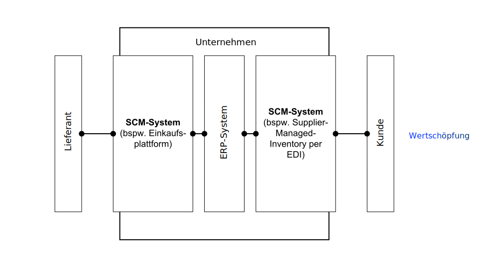
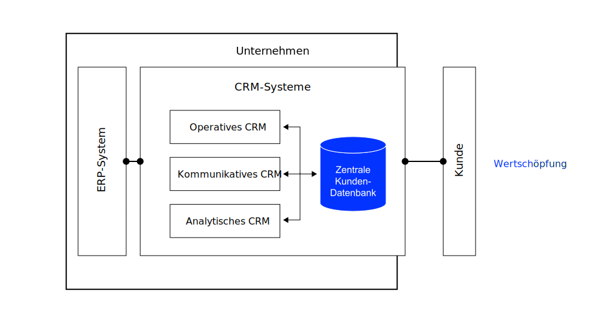

K6 Anwendungssysteme
Grundzüge der Wirtschaftsinformatik (GWI)
Motivation
Zu den gewaltigen Kosten für die Softwareumstellung als solche kommen jeden Tag neue für Fehlersuche und Problembeseitigung. Ernst Prost (2019), Geschäftsführer der Liqui Moly GmbH in Ulm
Damit das nicht passiert, müssen die passenden Anwendungssysteme ausgewählt und an die Geschäftsprozesse angepasst werden (und/oder vice versa). Welche Anwendungssystemklassen in Unternehmen eingesetzt werden, behandelt dieses Kapitel.
Lernergebnisse
Nach dieser Einheit
- können Sie den Begriff Anwendungssystem erläutern und vom Begriff Informationssystem abgrenzen,
- sind Sie in der Lage, betriebliche Anwendungssysteme nach unterschiedlichen Kriterien zu klassifizieren,
- können Sie beschreiben, wie die Anwendungssystem-Kategorien ERP, SCM und BI aufgebaut sind und welchem Zweck diese jeweils dienen,
- sind Sie in der Lage, den Begriff Business Intelligence (BI) zu erläutern und die Komponenten eines BI-Systems zu beschreiben und
- kennen Sie die Argumente für und wider Individual- und Standardsoftware.
Wiederholung: IS
Einordnung
Informationssysteme (IS) unterstützen die Sammlung, Strukturierung, Verarbeitung, Bereitstellung, Kommunikation und Nutzung von Daten, Informationen und Wissen (Lemke und Brenner 2015).
Sie tragen zur Entscheidungsfindung, Koordination, Steuerung und Kontrolle von Wertschöpfungsprozessen sowie deren Automatisierung, Integration und Virtualisierung bei (Lemke und Brenner 2015).
Anwendungssysteme (englisch „Software“) sind in der Regel Teil eines Informationssystems.
Visualisierung

Anwendungssysteme
Definition
Als Anwendungssystem (AS) werden alle Programme und Daten, die (betriebliche) Aufgabenstellungen unterstützen, bezeichnet (Lemke und Brenner 2015).
In Kombination mit der Benutzerschnittstelle oder dem User Interface (UI) ist das Anwendungssystem ein technischer Teil eines (betrieblichen) Informationssystems (Lemke und Brenner 2015).
Anwendungssysteme werden verkürzt als Anwendung bezeichnet. Oft spricht man auch von „Applikation“ (Englisch „business application“ oder nur „application“). „App“ ist die Kurzform von Applications und wird oft im Zusammenhang mit mobilen Plattformen verwendet (bspw. Apps für das Smartphone, die über „App Stores“ geladen werden) (Abts und Mülder 2017).
Betriebliche AS
Betriebliche Anwendungssysteme unterstützen die Anwender innerhalb eines Unternehmens bei der Durchführung ihrer Aufgaben.
Anwendungen bilden dabei die Geschäftslogik bzw. die fachlichen Funktionszusammenhänge ab, die durch die Geschäftsprozesse definiert und repräsentiert werden (Alpar u. a. 2019).
In modernen Unternehmen werden fast alle Prozesse durch Anwendungssysteme unterstützt.
Prozesse

Einsatzzweck

AS wurden und werden häufig für einzelne Unternehmen bzw. deren Abteilungen oder sogar einzelne Arbeitsplätze entwickelt, was einem arbeitsplatz-, abteilungs- oder unternehmensübergreifenden Informationsfluss im Wege steht. Integration heißt, dass diese Grenzen wieder aufgehoben werden. Bei der Integration von AS müssen Daten, Funktionen und Prozesse aufeinander abgestimmt werden (Mertens u. a. 2016, 65–66).
Unter horizontaler Integration versteht man in der Wirtschaftsinformatik primär die Verbindung der operativen Systeme verschiedener Unternehmensbereiche, also z. B. die Weitergabe der aktuellen Auftragseingänge aus dem Vertrieb an die Produktionsplanung.
Vertikale Integration bezieht sich vor allem auf die Datenversorgung der analytischen Systeme aus den operativen Systemen. Sind bspw. kundenbezogene Informationen auf verschiedene AS verteilt, so ermöglicht erst eine Sammlung und Konsolidierung dieser Daten in einem BI-System eine umfassende Analyse der Rentabilität einzelner Marktsegmente.
Make or Buy
Für viele Bereiche sind Anwendungen am Markt erhältlich, mit der die fachlichen Anforderungen vieler Unternehmen abgedeckt werden können — sogenannte Standardsoftware (Mertens u. a. 2016).
Sind die Anforderungen des Unternehmens sehr spezifisch, so muss die Standardsoftware modifiziert bzw. erweitert werden.
Ist das nicht möglich, ist die Entwicklung eines unternehmensspezifischen Anwendungssystems erforderlich — sogenannte Individualsoftware (Mertens u. a. 2016).
Einführung und Betrieb von Standardsoftware sind in der Regel mit weniger Risiken behaftet:
- Niedrigere und besser kalkulierbare Kosten und höhere Investitionssicherheit
- Möglichkeiten zur Evaluierung vor Einführung
- Höhere Qualität (Reife, Stabilität und Skalierbarkeit, Standardkonformität)
- Abbildung von Best-Practice Prozessen
Auf der anderen Seite kann Individualsoftware besser auf die Unternehmensbelange zugeschnitten werden. So können bspw. spezifische Prozesse, die eine Basis für Wettbewerbsvorteile darstellen, unterstützt werden.
Fallstricke
Der Weg zu einer funktionalen Eigenentwicklung ist lange und steinig. Damit die in Abbildung 4 angedeuteten Probleme nicht auftreten, sollten folgende Punkte nicht unterschätzt, sondern gut geplant und durchgeführt werden.
Requirements Engineering (Anforderungserhebung)
- Erhebung: Ermitteln der Anforderungen
- Analyse: Klassifizierung und Organisation der Anforderungen
- Spezifikation: Physische Dokumentation der Anforderungen (Anforderungsdokument)
- Validierung: Überprüfung, ob alle Anforderungen korrekt erhoben wurden (Gültigkeit, Konsistenz, Vollständigkeit, Realismus und Überprüfbarkeit)
Betrieb und Weiterentwicklung

Beispiele
Kollaborationssysteme
Als Kollaborationssysteme (Collaboration Tools) werden Anwendungssysteme bezeichnet, die die Zusammenarbeit von Personen innerhalb eines Unternehmens (funktionsübergreifend) sowie auch unternehmensübergreifend ermöglichen und verbessern (Abts und Mülder 2017).
Die Zusammenarbeit kann sowohl synchron als auch asynchron erfolgen.
Mittels Kollaborationssysteme sollen Mitarbeiter funktionsübergreifend besser miteinander kommunizieren und das Wissen untereinander teilen.
Beispiele: Office 365, Google Docs, Slack, etc.
ERP-Systeme
Als Enterprise Resource Planning Systeme (ERP-Systeme) bezeichnet man integrierte betriebswirtschaftliche Standardanwendungssoftware.
Integriert bedeutet, dass sämtliche oder wesentliche Teile der Geschäftsprozesse innerhalb des Unternehmens unterstützt werden (u.a. Beschaffung, Produktion, Vertrieb und Rechnungswesen) und Daten in einer zentralen Datenbank gehalten werden (Abts und Mülder 2017).
ERP-Systeme ermöglichen die horizontale und vertikale Integration von Prozessen.
Visualisierung (ERP)

SCM-Systeme
Supply-Chain-Management (SCM) beschreibt die aktive Gestaltung aller Prozesse, um Kunden oder Märkte in Wertschöpfungsketten wirtschaftlich mit Produkten und Dienstleistungen zu versorgen.
SCM-Systeme unterstützen die Geschäftsprozessintegration innerhalb der Wertschöpfungskette zwischen den einzelnen Unternehmen auf den unterschiedlichen Wertschöpfungsstufen und dem Endkunden Bächle, Daurer, und Kolb (2021).
SCM-Systeme steuern und optimieren unternehmensübergreifende Informations-, Geld- und Güter- und Dienstleistungsströme und unterstüzten damit bei der Gestaltung, Planung und Steuerung von Lieferketten.
Visualisierung (SCM)

Zielsetzungen (Auswahl):
- Verringerung des Bullwhip-Effekts
- Erhöhung der Liefertreue Kosteneinsparungen bspw. durch höhere Kapazitätsauslastung und
- Senkung von Lagerbeständen, Verringerung der Lead-Time, etc.
CRM-Systeme
Customer-Relationship-Management (CRM) umfasst den Aufbau und die Festigung langfristig profitabler Kundenbeziehungen durch abgestimmte und kundenindividuelle Marketing-, Sales- und Servicekonzepte mit Hilfe moderner IT.
CRM-Systeme sind Anwendungssysteme, die sämtliche Interaktionen der Unternehmung mit Kunden verfolgen und analysieren, um Umsatz, Rentabilität, Kunden-zufriedenheit und Kundenbindung zu optimieren. Diese Systeme
- vereinen eine Vielzahl von Einzellösungen aus verschiedenen Unternehmensbereichen
- lassen in die beiden Teilbereiche operatives CRM und analytisches CRM aufteilen.
In der Regel unterscheidet man zwischen operativen, analytischen und kommunikativen CRM-Systemen
Visualisierung (CRM)

Operatives CRM
Systeme, die Unterstützung für das Tagesgeschäft in der direkten Interaktion mit den Kunden bieten, insbesondere - Unterstützung des Kundenkontakts durch Integration aller Daten zum Kunden - Bereitstellung von Anwendungen für das Front- und Backoffice (bspw. Angebotsmgmt) - Verbesserung der Reaktionsfähigkeit auf Kundenbedürfnisse, Effizienz und Integration der Lieferketten
Hauptziel ist es, die Kunden zufrieden zu stellen und so viele Daten wie möglich zu sammeln.
Analytisches CRM
Systeme, die helfen 360°-Sichten auf den Kunden durch Zusammenführung aller verfügbaren Daten zu erstellen, z.B.,
- Beziehungskarten und Kontaktverlauf
- Demografische und psychografische Daten
- Rentabilitätskennzahlen (z. B. Share of Wallet)
- Marketing- und Vertriebsinformationen
- Daten zur Produktnutzung
Hauptziel ist die Gewinnung von Wissen über den Kunden, um Ableitungen für die Interaktion mit dem Kunden zu gewinnen und Strategien zur Marktbearbeitung zu entwickeln (bspw. mittels Kundensegmentierung)
Kommunikatives CRM
Kommunikative CRM Systeme sind oftmals Teil operativer CRM Systeme. Sie umfassen das Management aller Kommunikationskanäle zwischen Kunde und Unternehmen (Telefonie, Internet, E-Mail, Direct Mailing, etc.). Die verschiedenen Kommunikationskanäle werden synchronisiert, gesteuert und eingesetzt, um eine zielgerichtete Kommunikation zwischen Kunden und Unternehmen zu ermöglichen. Dieser Ansatz wird auch als Multi Channel Management bezeichnet.
Grundsätzlich kann zwischen dem direkten und indirekten Kommunikationskanal unterschieden werden.
- Direkte Kommunikation: Das Unternehmen tritt unmittelbar mit den Kunden in Kontakt (bspw. Besuche von Außendienstmitarbeitern, Telefonate, direkter Kontakt mit dem Verkaufspersonal in Verkaufsräumen, Kontakt via Chat oder Instant Messaging, etc.)
- Indirekte Kommunikation: Es findet kein direkter persönlicher Kontakt zwischen Unternehmen und Kunden statt (bspw. Briefe, Faxe, E-Mail-Kampagnenm etc.)
BI-Systeme
Business Intelligence (BI) bezeichnet ein integrierter, IT-basierter Gesamtansatz zur Unterstützung betrieblicher Entscheidungen.
BI-Systeme kombinieren Komponenten für die Beschaffung, Aufbereitung und Bereitstellung von Daten. Zielsetzung ist, neue Erkenntnisse aus bestehenden Daten für bessere Entscheidungen zu gewinnen (Abts und Mülder 2017).
- BI-Systeme bauen auf einem Data Warehouse1, einer zentralen Datenbank, die aktuelle und historische Daten in aggregierter und mehrdimensionaler Form speichert, auf
- Die Daten aus dem DW werden in der Regel mittels OLAP analysiert
- Mittels Data Mining werden die Daten analysisert, um sinnvolle Muster oder Regelmäßigkeiten zu entdecken (bspw. Kaufverhalten der Kunden)
Visualisierung (BI)

✏️ Aufgaben
A1: Beispiele
Finden Sie jeweils ein Beispiel für folgende Kategorien an Anwendungssystemen und begründen Sie die Zuordnung
- Analytisches Anwendungssystem
- Standardsoftware
- Indivudalsoftware
- Anwendungssystem für HR
- Anwendungssystem für Marketing und Sales
A2: Wasserfallmodell
Im sogenannten Wasserfallmodell ist festgelegt, dass mit einer Phase des Software-Engineerings erst begonnen werden darf, wenn die vorangehende Phase vollständig abgeschlossen ist.
Überlegen Sie, welche Nachteile ein solch striktes Vorgehen haben könnte.
Unter dem Begriff Software Engineering werden alle ingenieurmäßigen Vorgehensweisen zur Entwicklung von Anwendungssystemen (Individualsoftware) zusammengefasst. In der Regel folgt das Software-Engineering einem definierten Vorgehensmodell. Die meisten Vorgehensmodelle unterscheiden min. zwischen den Phasen Analyse, Entwurf, Realisierung und Einführung
In der Analysephase wird der Ist-Zustand analysiert (Erhebung und Bewertung), der Soll-Zustand definiert (fachliche Anforderungen und technische Anforderungen) und es werden Wirtschaftlichkeitsvergleiche angestellt. Ergebnis ist die Anforderungsspezifikation (Lasten- und Pflichtenheft, Englisch „requirements definition“).
In der Entwurfsphase werden Systementwurf (Definition der Datenstrukturen, Funktionen, Prozessabläufe, etc.), Programmspezifikation (Vorgaben für die technische Entwicklung) und Programmentwurf erstellt. Ergebnis ist die Entwurfsspezifikation (Englisch „design specification“).
In der Realisierungsphase wird das Programm programmiert und getestet. Ergebnis ist ein lauffähiges, möglichst fehlerfreies Softwaresystem.
In der Einführungsphase wird das System vom Kunden bzw. Nutzer abgenommen (Abnahmetest), das System in den Betrieb überführt und letzte Anpassungen vorgenommen. Ergebnis ist ein freigegebenes System bzw. eine neue Systemversion.
A3: Agile Vorgehensmodelle
Recherchieren Sie zu agilen Vorgehensmodellen. Fassen Sie die aus Ihrer Sicht wichtigsten Vorteile zum Wasserfallmodell in eigenen Worten zusammen.
Folgende Quellen könnten nützlich sein: Abts und Mülder (2017), Bächle, Daurer, und Kolb (2021) und Agile Essentials der Agile Alliance
Um die Nachteile des Wasserfallmodells zu vermeiden werden in vielen Unternehmen mittlerweile häufig agile Vorgehensmodelle des Software-Engineerings eingesetzt (bspw. Scrum, Kanban).
Diese sind als Gegenentwurf zu den traditionellen Vorgehensmodellen entstanden und zielen unter anderem darauf ab, auf Anforderungsänderungen schnell reagieren zu können. Die agilen Vorgehensmodelle basieren auf denselben Prinzipien und weisen Gemeinsamkeiten im Vorgehen auf.
A4: OLAP
OLAP steht für „Online Analytical Processing“ und erlaubt die mehrdimensionale Abfrage von Daten im Data Warehouse. Die Mehrdimensionalität wird üblicherweise anhand eines Datenwürfels (Data Cube; OLAP Cube) veranschaulicht.
Recherchieren Sie zu OLAP, skizzieren Sie einen Datenwürfel und beschreiben Sie die Slice-Funktion sowie deren Nutzen.
Literatur
Fußnoten
Teilbereiche des DW werden als Data Mart bezeichnet. Sie werden insbesondere zur Steigerung der Performance eingerichtet (z. B. Data Mart für den Vertrieb)↩︎